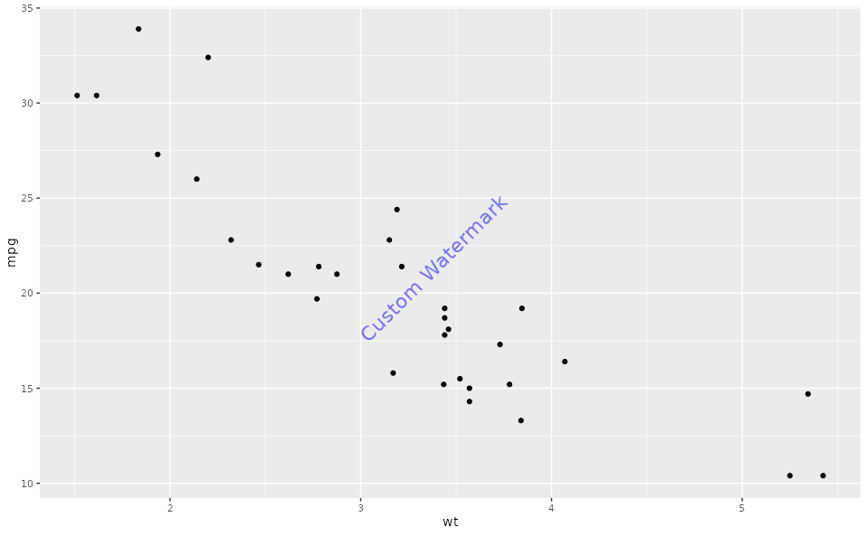
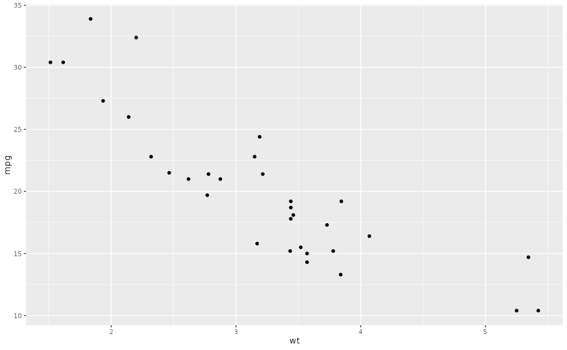
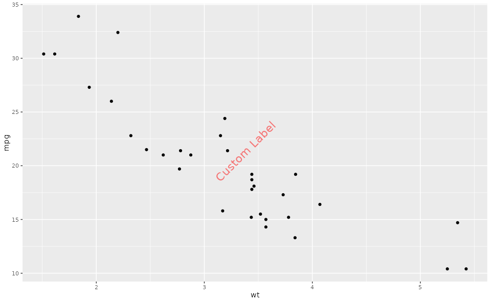

Create a ggplot with an optional watermark
ggplotWithWatermark.RdThis function creates a ggplot object and adds a watermark if the watermark option is enabled. The watermark can be customized with various options such as position, angle, font size, color, and transparency.
Value
A ggplot object, which may have the class "ggWatermark" if the watermark is enabled. The object can be printed or further modified as needed.
Details
If the watermark feature is enabled, the resulting ggplot object will include a watermark overlay when printed. The watermark's properties are determined by options set in the Ospsuite plotting configuration.
The following options can be used to customize the watermark:
watermark_label: Text to be displayed as the watermark.watermark_format: A list with the following entries:x: The x-coordinate for the watermark's position on the plot.y: The y-coordinate for the watermark's position on the plot.angle: The angle at which the watermark text is displayed (in degrees).fontsize: The size of the font for the watermark text.color: The color of the watermark text, specified in a valid color format (e.g., "red", "#FF0000").alpha: The transparency level of the watermark text, ranging from 0 (completely transparent) to 1 (completely opaque).
See also
Other watermark:
addWatermark(),
plot.ggWatermark(),
print.ggWatermark()
Examples
# Set watermark option first (required)
options(ospsuite.plots.watermark_enabled = TRUE)
# Example usage with watermark enabled
plotWithWatermark <- ggplotWithWatermark(data = mtcars, aes(x = wt, y = mpg)) +
geom_point()
print(plotWithWatermark)

# Example usage with watermark disabled
setOspsuite.plots.option(optionKey = OptionKeys$watermark_enabled, value = FALSE)
plotWithoutWatermark <- ggplotWithWatermark(data = mtcars, aes(x = wt, y = mpg)) +
geom_point()
print(plotWithoutWatermark)

# Reset options
setOspsuite.plots.option(optionKey = OptionKeys$watermark_enabled, value = TRUE)
# Example usage with customized watermark
setOspsuite.plots.option(optionKey = OptionKeys$watermark_label, value = "Custom Label")
watermark_format <- getOspsuite.plots.option(optionKey = OptionKeys$watermark_format)
watermark_format$color <- "red"
setOspsuite.plots.option(optionKey = OptionKeys$watermark_format, value = watermark_format)
plotWithCustomizedWatermark <- ggplotWithWatermark(data = mtcars, aes(x = wt, y = mpg)) +
geom_point()
print(plotWithCustomizedWatermark)

# Reset options
setOspsuite.plots.option(
optionKey = OptionKeys$watermark_format,
value = getDefaultOptions()[[OptionKeys$watermark_format]]
)
setOspsuite.plots.option(
optionKey = OptionKeys$watermark_label,
value = getDefaultOptions()[[OptionKeys$watermark_label]]
)